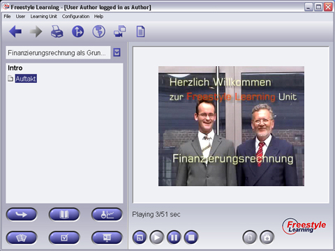

When you dive into a Learning Unit for the first time, you should have a look at the Intro View. Here you find some motivating videos and introduction to the author(s) of this Unit. Use the Interaction Buttons to start and stop playing these videos.

Select any element from the Structure Tree and press the "Play" button to view the video. During playback, press "Pause" to hold and again "Play" to continue. Pressing the "Stop" button stops playing and resets the video file.
View Specific Element Interaction Buttons
|
Play | Start playing video if paused or stopped |
|
Pause | Pause video while playing |
|
Stop | Stop and reset video |
| Full Screen or scale Mode | Switch between Full Screen Option and Scale Mode | |
| Scale | Play Video in original size or window scaled mode |
Back to Main Help Page